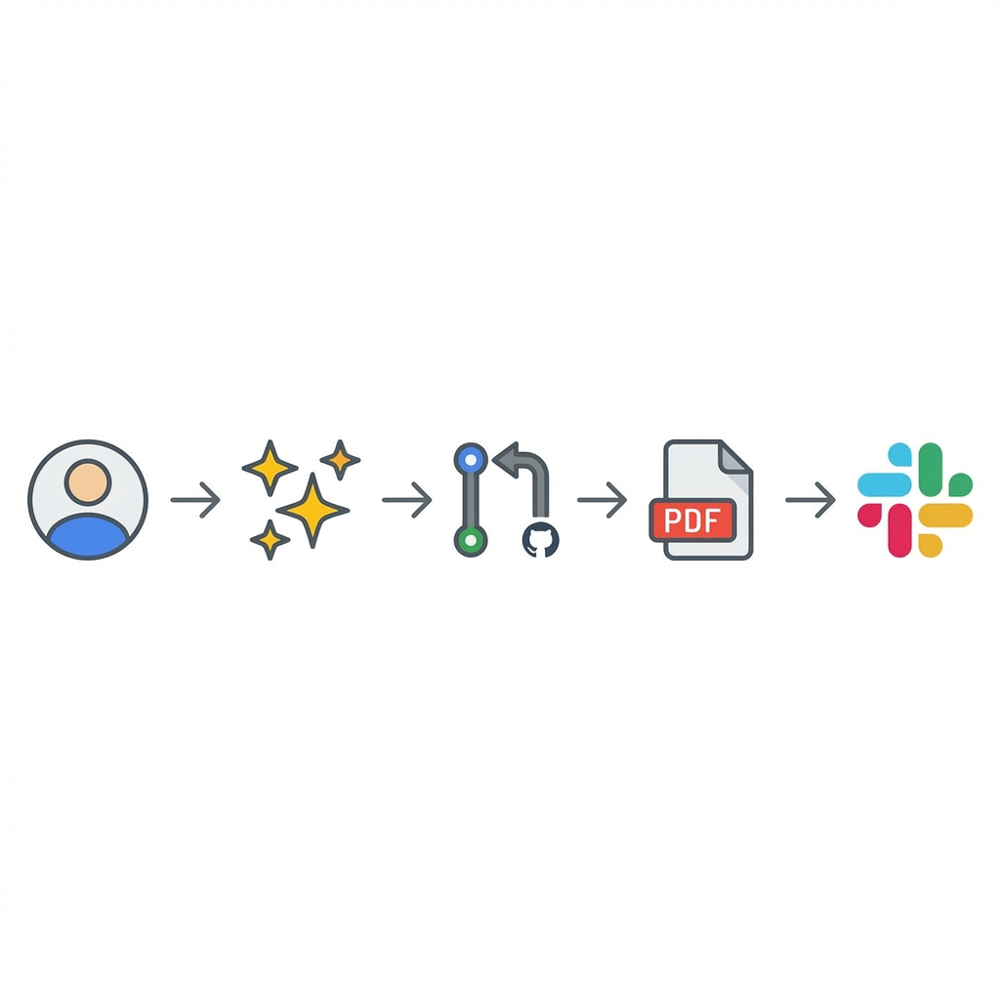
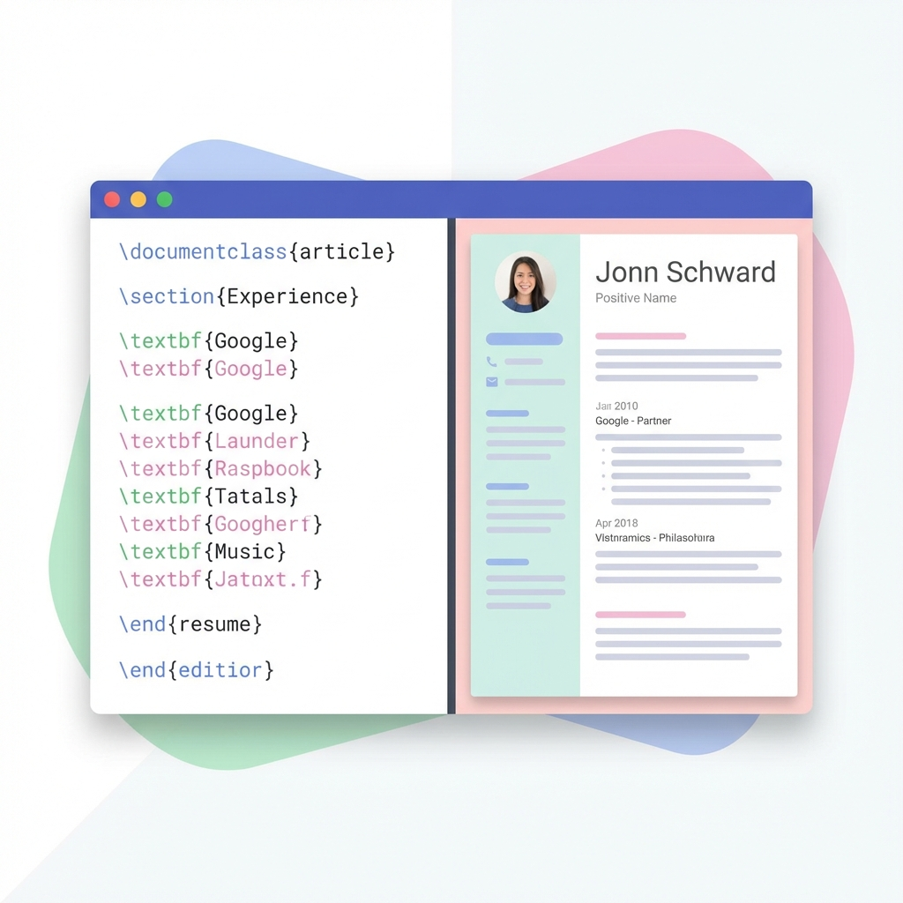

Automating My Resume with GitHub Actions & AI
Updating a resume is painful. Formatting margins in Word, dealing with PDF exports, and remembering which version file is the current one. I decided to fix this forever.
The Stack (Tools I Use)
I built this automated system using a specific set of tools. Click on any of them to learn more:
LaTeX (The Language)
Think of this as "writing code to create a PDF". Instead of dragging text boxes in Word, you
write commands like \section{Education}.
GitHub Actions (The Robot)
A service that automatically runs tasks. In this case, it acts as a "virtual printer" that creates the resume whenever I update the file.
View Actions ↗Jules (Google AI)
My artificial intelligence assistant. It understands plain English and writes the complicated LaTeX code for me.
Google Agents ↗TmpFiles (The Cloud)
A simple service that temporarily hosts files so my "robot" can send me a downloadable link.
Check Service ↗How It Started
I didn't write the original resume code from scratch. That would be painful. I asked ChatGPT to "Create a modern resume template in LaTeX".
I took that code and pasted it into Overleaf,
which is an online editor that lets you see your PDF as you type. Once I was happy with how it looked, I
saved the file as resume.tex and uploaded it to my code repository.
The "No-Touch" Workflow
Now, I don't even need to open the file. Here is how I update my resume from my phone:
1. AI-Driven Updates
I simply tell my AI agent, Jules: "Add my new experience at Company X with these achievements..."
Jules understands what I mean, writes the complex code needed to add that section to the document, and proposes the change.
2. The "Virtual Printer"
Once I approve the change, GitHub Actions wakes up. It creates a temporary computer in the cloud that has all the font and printing tools installed.
It takes my code, compiles it, and produces a brand new, pixel-perfect PDF file.
3. Instant Delivery
The workflow finishes by uploading the new PDF to tmpfiles.org and sending a notification to my private Slack channel.
- I approve the change on my phone.
- 30 seconds later, I get a message: "New Resume Ready" with a download link.
The Result?
I can be on my phone, approve a PR, and 30 seconds later, a fresh, perfectly formatted PDF resume arrives in my Slack, ready to be forwarded to a recruiter.
No Word documents. No formatting issues. Just pure, automated efficiency.
Want to see the code?
View on GitHub